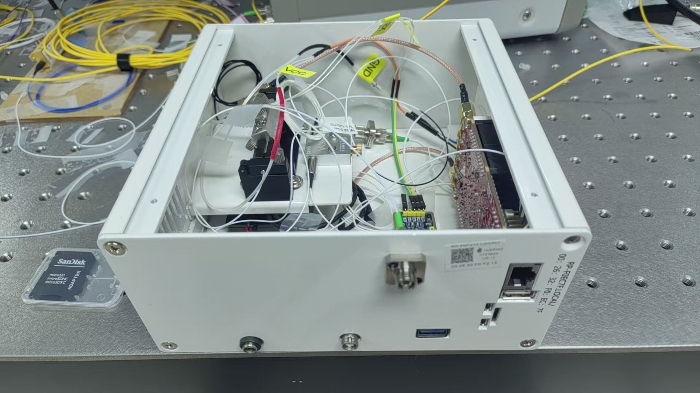
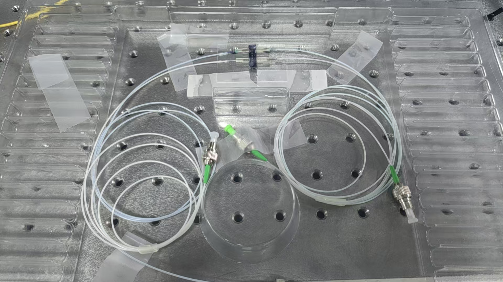
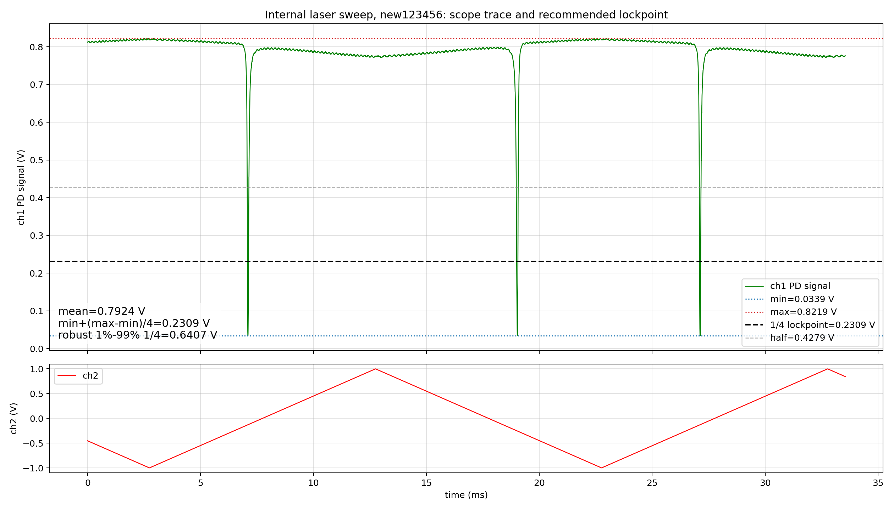
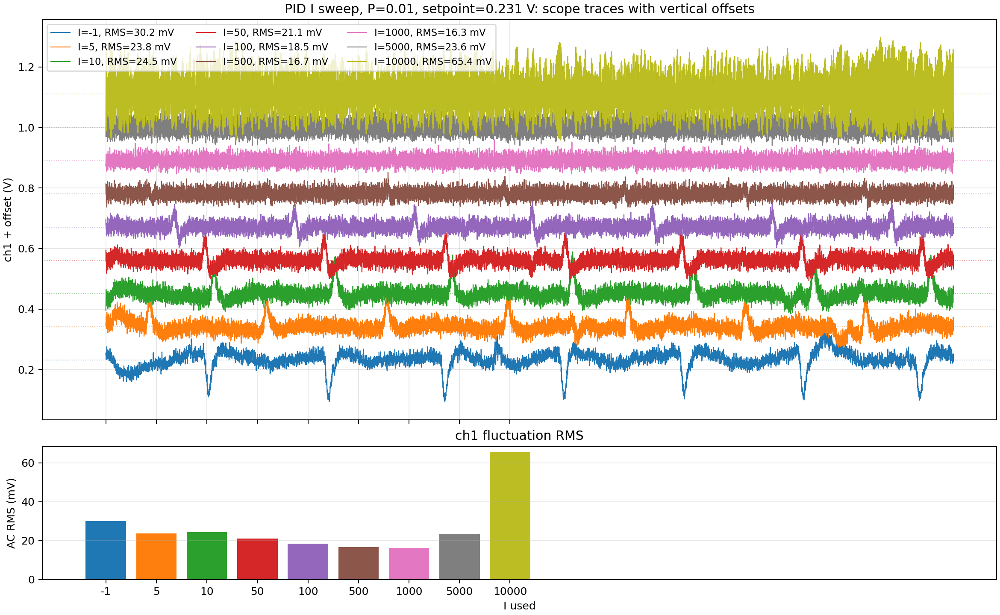
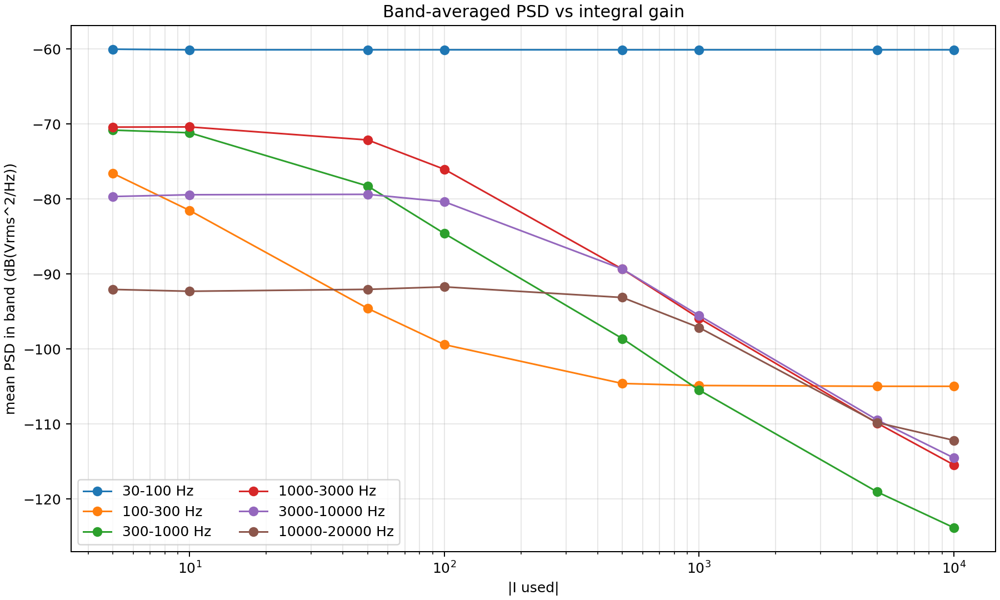
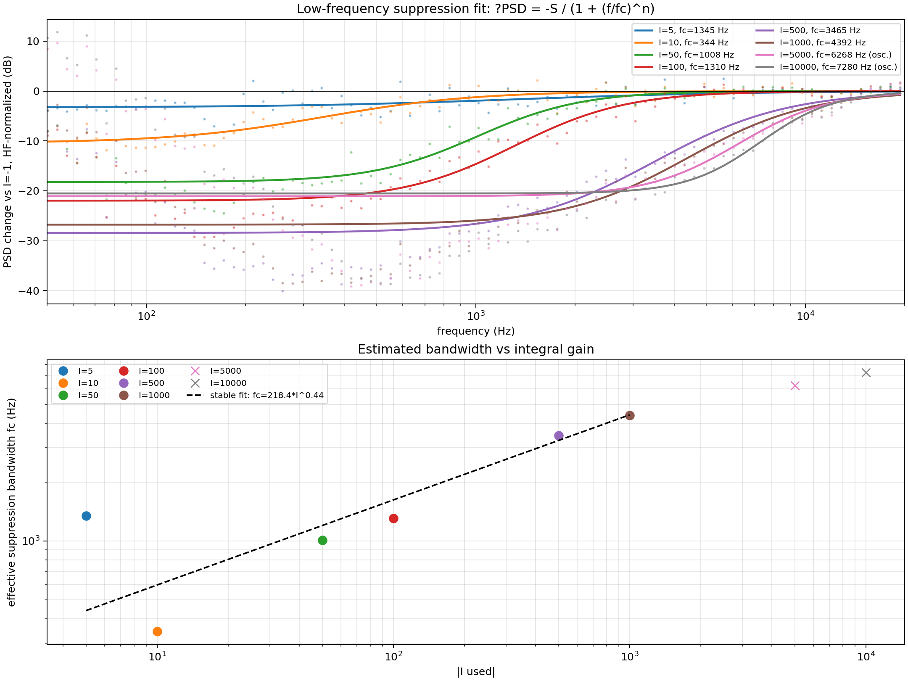
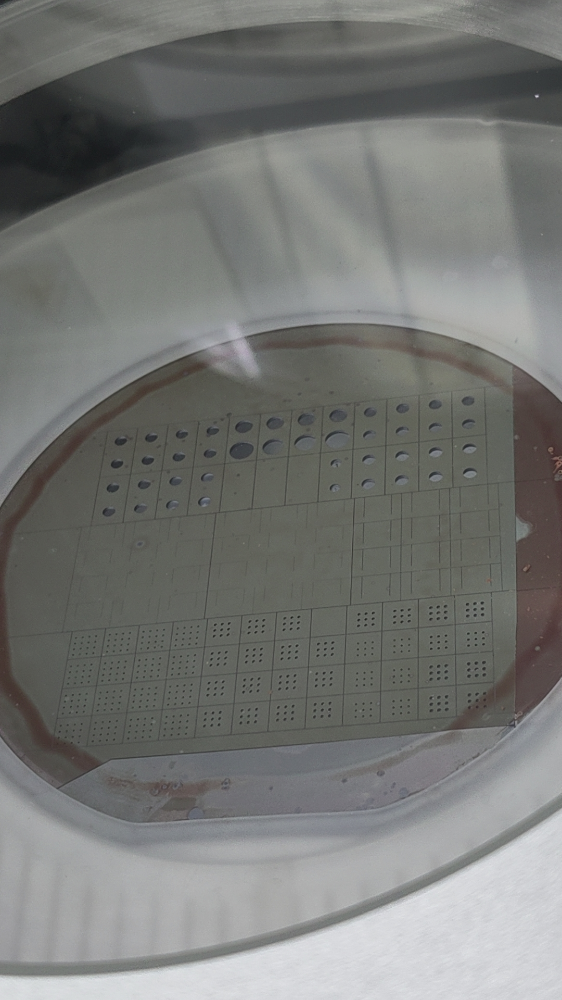
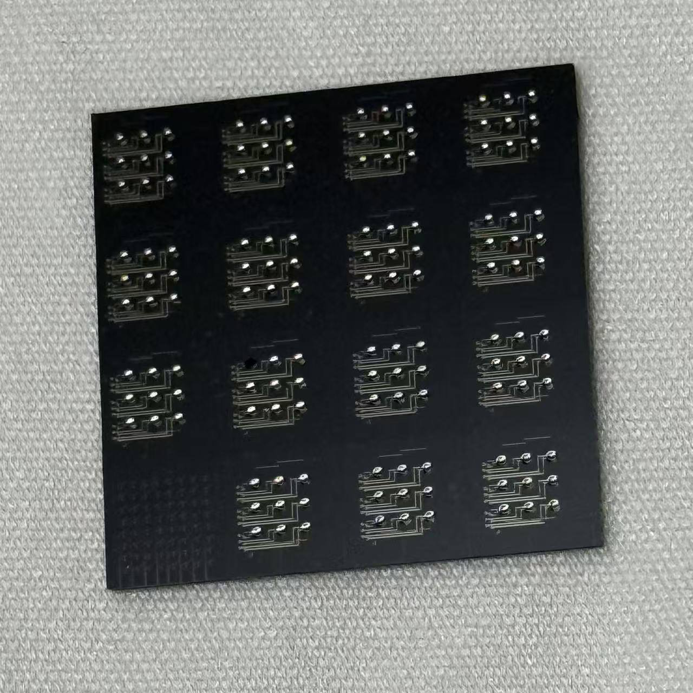
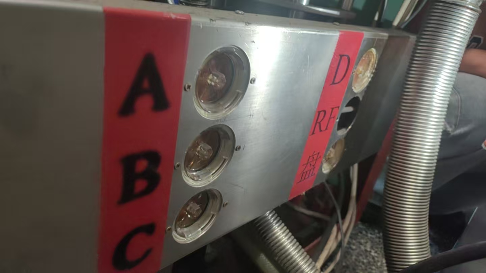
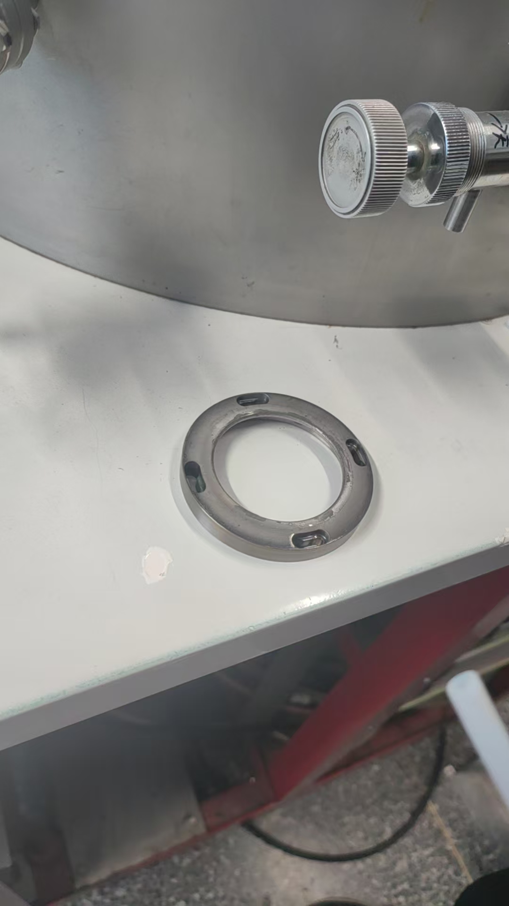

Weekly Report
深硅开洞样品推进与 Red Pitaya PID 噪声测试
本周把加工样品推进到可测阶段，并初步发现 PID 积分参数会显著改变微腔传感器低频噪声 PSD。下一步关键问题是：这种闭环降噪是否真正改善低频超声信号的 SNR。
2026-05-18 至 2026-05-23
本周主线
样品加工
深硅开洞推进到可测阶段，获得 6 个深硅开洞 chip 和 3 个片上磁力仪 chip。
工艺平台
沉淀 FeGaB/Ta 长厚膜磁控溅射设备维护 checklist。
测量结果
Red Pitaya PID I 参数会增强低频 PSD 抑制，但灵敏度影响待验证。
组会主线建议：先讲 PID 噪声测试，再补充深硅样品和磁控厚膜保障。
实验平台与端口映射
微腔传感器光路
DFB 激光器扫过微腔模式，PD 读出透射光强变化。
DFB 激光器扫过微腔模式，PD 读出透射光强变化。
↓
PD / 光电流读出
光电流转换为电压信号，进入 Red Pitaya 的
光电流转换为电压信号，进入 Red Pitaya 的
In1。↓
Red Pitaya + PyRPL PID
ch1 对应 In1 的 PD 电压；PID 以该通道作为反馈读出。↓
激光器控制端
Out2 输出 PID 控制信号给激光器，用于调节激光器工作点。

In1
Out2
Red Pitaya 端口关系
In1：接收 PD / 光电流转换后的电压信号。
Out2：输出 PID 控制信号，反馈到激光器控制输入。
Out2：输出 PID 控制信号，反馈到激光器控制输入。
后续记录测量 session 时，需要主动补齐“仪器平台图、物理端口、软件通道、信号含义”的对应关系，避免复盘和汇报时只剩参数、缺少实验连接方式。
科学问题：PID 是降噪，还是也压信号？
- 微腔传感器最终读出通道是
ch1，即 PD 电压。 - PID 锁定能稳定工作点，并压低低频波动。
- 但低频超声信号也可能通过同一通道进入。
- 因此，低频 PSD 下降不等于灵敏度提高。
下一步必须用已知低频超声或等效波长调制，比较不同 I 下的信号峰、噪声 PSD 和 SNR。
锁点选择：1/4 深度点
本轮有效数据采用模式深度的 1/4 位置作为锁点：
T_lock = T_min + (T_max - T_min) / 4| 项目 | 数值 |
|---|---|
T_min | 0.03394 V |
T_max | 0.82190 V |
T_lock | 0.23093 V |

本轮采用的光学模式与 1/4 深度锁点。
I sweep 设计
| 项目 | 设置 |
|---|---|
| 激光源 | 封装机箱内部 DFB 激光器 |
| PyRPL 配置 | new123456 的临时运行副本 |
| 锁点 | 0.231 V |
| P | 0.01 |
| I | -1, 5, 10, 50, 100, 500, 1000, 5000, 10000 |
| 采集 | 每组 10 ms scope + 0-100 kHz spectrum |
配置安全：自动化采集使用临时 runtime config，未直接污染用户 GUI 配置。
I sweep 主要结果
| I | AC RMS | 判断 |
|---|---|---|
-1 | 30.18 mV | 弱反馈参考 |
500 | 16.68 mV | 较稳定 |
1000 | 16.35 mV | 较稳定 |
10000 | 65.38 mV | 不稳定风险 |
- 适度增大 I 会减小时域 dip/peak。
I=500-1000是本轮较稳定区间。- I 过大时，可能引入环路振荡或非线性动态。

I sweep 下的时域波动对比。
低频 PSD 抑制随 I 增强

分频段 PSD 随 I 变化。

低频抑制带宽经验拟合。
在
I=10-1000 区间，低频抑制带宽约从 344 Hz 增至 4392 Hz，经验关系约为 fc ≈ 141 * I^0.50 Hz。解释边界
已经说明
在当前锁点和读出链路下，PID I 参数会改变低频 PSD，并在一定范围内降低时域波动。
尚未证明
低频 PSD 降低是否等价于低频超声灵敏度提高。最终仍需已知激励下的 SNR 对比。
关键边界：若低频信号和低频噪声经过同一闭环传递函数，二者可能被同比例抑制，SNR 未必提升。
并行进展：深硅开洞样品进入可测阶段
- SiO2 消耗：约
3.07 nm/cycle。 - Si 刻蚀估算：约
1.2 um/cycle。 - 正式样品停止在
230 cycle：大洞刻透，小洞约80%。 - 获得
6个深硅开洞 chip，3个片上磁力仪 chip。


工艺保障：FeGaB/Ta 厚膜 checklist
- FeGaB：RF
100 W，0.5 Pa，Ar 约35 sccm，约0.15 nm/s。 - Ta：
0.5 A，约100 s / 5 nm。 - 典型叠层：
FeGaB 200 nm + Ta 2 nm。 - 重点检查：循环水、Ar 手阀、隔离罩 1 mm、靶枪/挡板清理。


下周计划
- 对深硅开洞 chip 建立 chip/die 级测试表，记录刻透、裂纹和可测性。
- 用已知低频超声或等效波长调制测试不同 I 下的信号峰值、噪声 PSD 和 SNR。
- 区分 Red Pitaya 本底噪声、闭环 PID 抑制和微腔/光路真实噪声。
- 若继续做 FeGaB/Ta 厚膜，按磁控溅射 checklist 控制颗粒和冷却风险。
母稿：weekly_report.md；图片资产：assets/。